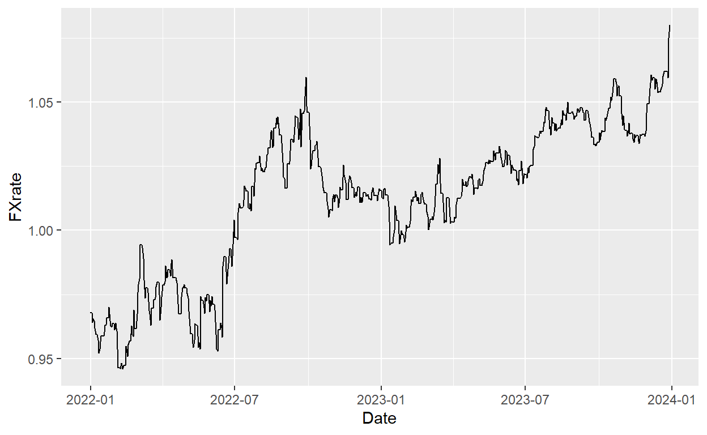

Repository of R functions and code to obtain publicly available financial data from various sources
This post includes functions and code that obtain financial data such as FX rates, stock returns, and valuation multiples. Each section is named after the data source. I might add new code over time to this post. I will not explain the code or study the data in much detail, this is really only meant to show how to get the data into R quickly.
This code is simply copied from this post.
#' Wrapper to import data from Excel
#'
#' This functions serves as a wrapper to easily import data from particular Excel files, for example
#' as provided by Damodaran on his website. These Excel files have a format in which information is
#' provided in the first couple of lines and then the actual data set starts.
#'
#' Functions such as \code{\link{read_excel}} allow the user to explicitly tell the function which
#' rows to skip. While this is certainly a helpful feature, it becomes cumbersome for many similar
#' files but with different number of rows that can be skipped as the user would have to open each
#' file manually to come up with the parameters. This wrapper tries to do it automatically.
#'
#'
#' @param .str_file string; file location.
#' @param .file_ext string; extension of the Excel-file. Default: ".xls", for which this function
#' is tested. So might not work with other Excel file extensions.
#' @param .perc_numeric numeric; the percentage above which you assume a column is of type numeric.
#' Background: in the function, you convert a column to numeric with \code{
#' as.numeric}; this will return NA if this function does not know how to
#' convert the value to numeric; hence, you can guess now that if there aren't
#' too many NAs from this function, the column is actually a numeric one.
#' The default is 0.15, which means that a column is considered numeric if
#' at least 15 per cent of the values can be converted.
#' @param .bol_option_1 boolean; if TRUE, the header position is determined by looking at the starting
#' point of non-NA values after conversion to non-numeric that occurs most often.
#' if FALSE, you use the first row that has all observations (which is most likely
#' the header).
#' @return data.table from reading the Excel file with the start row determined by this wrapper.
#'
#' @importFrom readxl read_excel
#' @importFrom httr GET write_disk
#'
#' @export
#'
#' @references
#' \url{https://stackoverflow.com/questions/41368628/read-excel-file-from-a-url-using-the-readxl-package}
#'
#' @examples
#' \dontrun{
#' str_file <- "http://pages.stern.nyu.edu/~adamodar/pc/archives/vebitda18.xls"
#' import_from_excel(str_file)
#' }
import_from_excel <- function(.str_file, .file_ext = ".xls", .perc_numeric=0.15,
.bol_option_1=TRUE, ...) {
#### Save URL file locally with GET
httr::GET(.str_file, write_disk(tf <- tempfile(fileext = ".xls")))
####Save the file into a data.table
intDT <- as.data.table(readxl::read_excel(tf))
####Determine first row by two ways
## 1. It's likely that most columns in the data set are numeric; hence, you will convert
# each column to a numeric and save the first non-NA number; the row where this happens
# most often (essentially the median) is your best guess for the first data row (i.e.
# one below the header)
i <- 1
vec_first_number <- numeric(ncol(intDT))
col_types <- rep("guess", times=ncol(intDT))
for (col in names(intDT)) {
vec <- suppressWarnings(as.numeric(unlist(intDT[,col, with=FALSE])))
vec_first_number[i] <- suppressWarnings(min(which(!is.na(vec))))
#In case there is no numeric data in there, your best guess is that the data set starts
#at the second line (after headers)
if (!is.finite(vec_first_number[i])) {
vec_first_number[i] <- 2
}
# Also save if you believe that the column in a numeric one, as you can read the column as
# numeric later
if (sum(!is.na(vec))/length(vec)>.perc_numeric) {
col_types[i] <- "numeric"
}
i <- i + 1
}
pos_header1 <- median(vec_first_number, na.rm=TRUE) - 1
## 2. If the first few rows do not belong yet to the actual data set, you would expect more NAs
# there than in the data set thereafter. In particular in case of a data set with headers,
# with you kinda require here, you must expect that the row with the headers doesn't have
# any NAs; hence, simply use the first occurrence of a row with no NAs as the decision
# criterium
# Of course, this can fail if one of the information rows is filled up or if there is
# no header row or even the header includes NAs.
# Get NAs per row
# https://stackoverflow.com/questions/35306500/r-data-table-count-na-per-row
intDT[, num_obs := Reduce(`+`, lapply(.SD,function(x) !is.na(x)))]
pos_header2 <- suppressWarnings(min(which(intDT$num_obs==max(intDT$num_obs))))
if (!is.finite(pos_header2)) {
pos_header2 <- 1
}
intDT[, num_obs:=NULL]
if (pos_header2==pos_header2) {
cat("Success: Both approaches in import_from_excel guessed the same start row of the data set.\n")
pos_header <- pos_header1
} else {
ifelse(.bol_option_1, pos_header <- pos_header1, pos_header <- pos_header2)
}
#Download data again, now with skip filled in and check then number of columns; trim col_types
#This has to be done as otherwise it can happen that the last column doesn't exist anymore
#because it was only read before due to a line that is now excluded.
#See http://pages.stern.nyu.edu/~adamodar/pc/archives/fundgrEB14.xls as an example
intDT <- as.data.table(readxl::read_excel(tf, skip=pos_header))
if (ncol(intDT)<length(col_types)) {
col_types <- col_types[1:ncol(intDT)]
}
intDT <- as.data.table(readxl::read_excel(tf,
skip=pos_header,
col_names = TRUE,
col_types = col_types,
...))
unlink(tf) #Clean up the temporary file
return(intDT)
}As str_file, you have to pass a link to a file that is saved on Damodaran’s website. You can find the overview here. For example, to download the EV/EBITDA multiples of 2018, run the following code.
It is easy to wrap around a for loop and combine this data over time.
### Download Tax Rates
taxRatesDT <- data.table()
str_path <- "http://pages.stern.nyu.edu/~adamodar/pc/archives/"
for (year in 2014:2022) {
str_file <- paste0(str_path, "countrytaxrates", substr(year,star=3,stop=4), ".xls")
intDT <- import_from_excel(.str_file=str_file,
na = c("NA", "N/A"))
intDT[, Year:=year]
taxRatesDT <- rbind(taxRatesDT, intDT, fill=TRUE)
} Given the sheer size of Damodaran’s archive, it is not surprising that some inconsistencies or changes happen over time that make it difficult to fully automate it to obtain the data. In this particular case, as of December 2023, you will notice that column country was labelled “Location” until 2014 and from 2015 “Country”. Hence, you have to combine the columns. It also turns out that Damodaran changed the format for this particular data set and includes historical tax rates in newer data sets. You therefore end up with several rows for one country. To fix this, I create a new data set with only one line per country, averaging over all non-NA tax rates per year (they should all be the same anyways as they are duplicates).
Country 2006 2007 2008 2009 2010 2011 2012 2013
1: Germany 0.3834 0.3836 0.2951 0.2944 0.2941 0.2937 0.2948 0.2955
2014 2015 2016 2003 2004 2005 2017 2018 2019 2020
1: 0.2958 0.2969667 0.2972 0.3958 0.3829 0.3831 0.2979 0.3 0.3 0.3
2021 2022 2023E
1: 0.3 0.3 0.3I used this function already for example in the post on sector performance to obtain data from Kenneth French’s website.
#' Wrapper to import data in CSV format within a zip-folder
#'
#' This functions serves as a wrapper to easily import data from particular ZIP files that hold
#' CSV files, for example as provided by Kenneth French on his website. The user has to provide
#' the location of the files (can be a URL) and how many lines should be skipped.
#'
#' The numbers of line skipped can be passed with the \code{skip} argument in function
#' \code{fread} from the \code{data.table} package. See \code{?fread} for more information.
#'
#' @inheritParams import_from_excel
#' @param .file_ext string; extension of the Excel-file. Default: ".xls", for which this function
#' is tested. So might not work with other Excel file extensions.
#' @return data.table from reading the CSV file with the start row determined by this wrapper.
#'
#' @importFrom data.table fread
#'
#' @export
#'
#' @references
#' \url{https://stackoverflow.com/questions/3053833/using-r-to-download-zipped-data-file-extract-and-import-data}
#'
#' @examples
#' \dontrun{
#' ### Download factors
#' str_file <- "http://mba.tuck.dartmouth.edu/pages/faculty/ken.french/ftp/F-F_Research_Data_Factors_daily_CSV.zip"
#' import_from_CSV_in_zip(str_file, skip = 3)
#'
#' ### Download industry performances
#' str_file <- "https://mba.tuck.dartmouth.edu/pages/faculty/ken.french/ftp/10_Industry_Portfolios_daily_CSV.zip"
#' import_from_CSV_in_zip(str_file, skip = 9, header=TRUE)
#' }
import_from_CSV_in_zip <- function(.str_file, ...) {
temp <- tempfile()
download.file(.str_file,temp, mode="wb")
csvDT <- data.table::fread(unzip(temp), ...)
unlink(temp)
return(csvDT)
}
#' Function to get data from Kenneth French's website and format it
#'
#' @inheritParams import_from_CSV_in_zip
#'
#' @return TODO
#'
#' @importFrom lubridate ymd
#'
#' @export
#'
#' @references
#' \url{https://mba.tuck.dartmouth.edu/pages/faculty/ken.french/data_library.html}
#'
#' @examples
#' \dontrun{
#' str_file <- "http://mba.tuck.dartmouth.edu/pages/faculty/ken.french/ftp/F-F_Research_Data_Factors_daily_CSV.zip"
#' get_FF_data(str_file, skip = 3)
#'
#' ### Download industry performances
#' str_file <- "https://mba.tuck.dartmouth.edu/pages/faculty/ken.french/ftp/10_Industry_Portfolios_daily_CSV.zip"
#' DT <- get_FF_data(str_file, skip = 9, header=TRUE)
#' # Convert columns to numeric
#' cols <- names(DT)[2:ncol(DT)]
#' DT[ , (cols) := lapply(.SD, as.numeric), .SDcols = cols]
#' # Calculate the mean daily return (in bps) over the last years
#' require(lubridate)
#' DT[year(Date)>2010, lapply(.SD, mean), by = year(Date),.SDcols = cols]
#' DT[year(Date)>2010, lapply(.SD, mean), .SDcols = cols]
#' }
get_FF_data <- function(.str_file, ...) {
###1. Use import_from_CSV_in_zip to get data
csvDT <- import_from_CSV_in_zip(.str_file, ...)
###2. Change names of columns
# FF doesn't label the date column, enter
data.table::setnames(csvDT,
old = "V1",
new = "Date")
# Get rid of hyphens, don't ge well with column names
data.table::setnames(csvDT,
old = grep("-",names(csvDT),value=TRUE),
new = gsub("-", "", grep("-",names(csvDT),value=TRUE)))
###3. Convert Date column to date; through warning if format changed
if (sum(is.na(lubridate::ymd(csvDT$Date)))>0) {
stop("Error in parsing dates to date format: it seems the format in Kenneth French files has changed.")
}
csvDT[, Date:=lubridate::ymd(Date)]
return(csvDT)
}### Download daily factors
str_file <- "http://mba.tuck.dartmouth.edu/pages/faculty/ken.french/ftp/F-F_Research_Data_Factors_daily_CSV.zip"
dailyFactors_DT <- get_FF_data(str_file, skip = 3)
### Download industry performances
str_file <- "https://mba.tuck.dartmouth.edu/pages/faculty/ken.french/ftp/10_Industry_Portfolios_daily_CSV.zip"
DT <- get_FF_data(str_file, skip = 9, header=TRUE)
# Convert columns to numeric
cols <- names(DT)[2:ncol(DT)]
DT[ , (cols) := lapply(.SD, as.numeric), .SDcols = cols]
# Calculate the mean daily return (in bps) over the last years
require(lubridate)
#DT[year(Date)>2010, lapply(.SD, mean), by = year(Date),.SDcols = cols]
DT[year(Date)>2010, lapply(.SD, mean), .SDcols = cols] NoDur Durbl Manuf Enrgy HiTec Telcm
1: 0.03969231 0.06825231 0.04592923 0.03685538 0.07185846 0.03554769
Shops Hlth Utils Other
1: 0.05878154 0.05327692 0.03922154 0.05052308The ECB posts daily FX rates between the EUR and other currencies.
#' Import FX rates from the ECB website
#'
#' This functions downloads the FX rates directly from the ECB website and returns them
#' in long format. It also makes sure that there are no missing dates; in case a date is
#' missing in the ECB data set, it is filled with the previous value (see reference
#' to the Stackoverflow link on how this is done).
#'
#' All FX rates are in relation to the euro.
#'
#' It relies on \code{\link{import_from_CSV_in_zip}} to download the data, which is provided
#' as a CSV file in a zip folder.
#'
#' @inheritParams import_from_CSV_in_zip
#' @return data.table in long format including the FX rates as provided by the ECB bank on their
#' website. data.table has three columns: "Date", "CUR" (3-digit identifier of the currency),
#' "FXrate" (actual FX rate value).
#'
#' @export
#'
#' @references
#' \url{https://stackoverflow.com/questions/22956803/fastest-way-for-filling-in-missing-dates-for-data-table}
#'
#' @examples
#' \dontrun{
#' require(data.table)
#' str_file <- "https://www.ecb.europa.eu/stats/eurofxref/eurofxref-hist.zip?c39d518d60048add50a3cccd64e06146"
#' DT <- import_ECB_FX_rates(str_file)
#'
#' ### Which currencies (CUR) are covered
#' unique(DT$CUR)
#'
#' ### Plot for example CHF/EUR over time
#' require(ggplot2)
#' ggplot(DT[CUR=="CHF"], aes(x=Date, y=FXrate)) + geom_line()
#' }
import_ECB_FX_rates <- function(.str_file) {
### Import CSV File
DT <- import_from_CSV_in_zip(.str_file)
### Convert dates to date-format
DT[, Date:=ymd(Date)]
### Bring into long format
DT <- suppressWarnings(melt(DT, id.var="Date",
variable.name = "CUR",
variable.factor = FALSE, #Keep as character
value.name = "FXrate"))
DT[, FXrate:=as.numeric(FXrate)]
### Get rid of missing values
DT <- DT[!is.na(FXrate)]
###Fill in missing dates with previous value
#https://stackoverflow.com/questions/22956803/fastest-way-for-filling-in-missing-dates-for-data-table
setkey(DT, Date)
indx <- DT[,.(Date=seq(min(Date),max(Date),"days")),CUR]
# key the tables and join them using a rolling join
setkey(DT,CUR,Date)
setkey(indx,CUR,Date)
DT <- DT[indx,roll=TRUE]
return(DT)
}
#' Get FX pair from ECB data
#'
#' Starting with the data.table returned by \code{\link{import_ECB_FX_rates}}, this function
#' returns the FX rate between two currencies. \code{.CUR_base} is the basis of the FX rate.
#' For example, \code{.CUR_base="EUR"} and \code{.CUR=="USD"} is the equivalent of "USD/EUR".
#'
#' @param .dt data.table as returned by \code{\link{import_ECB_FX_rates}}
#' @param .start_date Start date for which the FX rate should be shown; Default: NA, i.e.
#' as far back as possible.
#' @param .end_date End date for which the FX rate should be shown; Default: NA, i.e.
#' as current as possible.
#' @param .CUR 3-digit currency identifier; think ".CUR_base/.CUR"
#' @param .CUR_base 3-digit currency identifier; think ".CUR_base/.CUR"
#' @return data.table with three columns: "Date", "FX", "FXrate"
#'
#' @export
#'
#' @examples
#' \dontrun{
#' require(data.table)
#' require(lubridate)
#' str_file <- "https://www.ecb.europa.eu/stats/eurofxref/eurofxref-hist.zip?c39d518d60048add50a3cccd64e06146"
#' DT <- import_ECB_FX_rates(str_file)
#'
#' dt <- get_FX_pair_from_ECB_rates(.dt = DT,
#' .start_date= dmy("31122020"),
#' .end_date = dmy("31122021"),
#' .CUR_base="EUR", .CUR="CHF")
#'
#' dt <- get_FX_pair_from_ECB_rates(.dt = DT,
#' .CUR_base="USD", .CUR="CAD")
#'
#' }
get_FX_pair_from_ECB_rates <- function(.dt, .start_date=NA, .end_date=NA, .CUR_base, .CUR) {
### Make a copy, you don't want to change the input .dt
#https://stackoverflow.com/questions/10225098/understanding-exactly-when-a-data-table-is-a-reference-to-vs-a-copy-of-another
intDT <- copy(.dt)
### Check currencies are in the table
if (.CUR_base=="EUR" | .CUR=="EUR") {
if (sum(c(.CUR_base, .CUR) %in% unique(intDT$CUR)) == 0) {
stop("At least one currency is not in the ECB table.")
}
} else {
if (sum(c(.CUR_base, .CUR) %in% unique(intDT$CUR)) < 2) {
stop("At least one currency is not in the ECB table.")
}
}
### Limit data.table from .start_date to .end_date
if (!is.na(.start_date)) {
intDT <- intDT[Date>=.start_date]
}
if (!is.na(.end_date)) {
intDT <- intDT[Date>=.end_date]
}
### Change names
setnames(intDT, c("CUR"), c("FX"))
### Check if one currency is EUR ==> just update FX value and return (potentially inversed)
if (.CUR_base=="EUR") {
intDT <- intDT[FX==.CUR]
intDT[, FX:=paste0(.CUR, "/", "EUR")]
intDT[, FXrate:=1/FXrate]
return(intDT)
}
if (.CUR=="EUR") {
intDT <- intDT[FX==.CUR_base]
intDT[, FX:=paste0("EUR/", .CUR_base)]
return(intDT)
}
### Limit data to relevant currencies
intDT <- intDT[FX %in% c(.CUR, .CUR_base)]
intDT <- dcast(intDT, Date ~ FX, value.var="FXrate")
eval_text <- paste0("intDT[, FXrate:=",.CUR, "/",.CUR_base,"]")
eval(parse(text=eval_text))
intDT[, FX:=paste0(.CUR_base, "/", .CUR)]
return(intDT[,list(Date,FX,FXrate)])
}require(data.table)
require(lubridate)
str_file <- "https://www.ecb.europa.eu/stats/eurofxref/eurofxref-hist.zip?c39d518d60048add50a3cccd64e06146"
DT <- import_ECB_FX_rates(str_file)
#'
dt_USD_CAD <- get_FX_pair_from_ECB_rates(.dt = DT,
.CUR_base="USD", .CUR="CAD")
#'
dt_EUR_CHF <- get_FX_pair_from_ECB_rates(.dt = DT,
.start_date= dmy("31122020"),
.end_date = dmy("31122021"),
.CUR_base="EUR", .CUR="CHF")
library(ggplot2)
ggplot(dt_EUR_CHF, aes(x=Date, y=FXrate)) + geom_line()